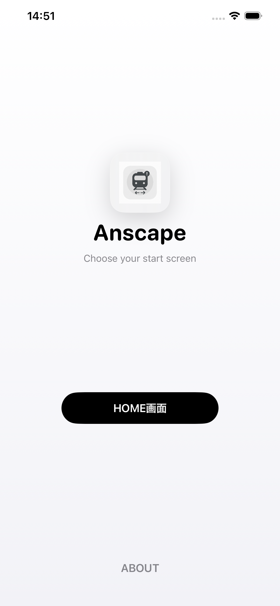
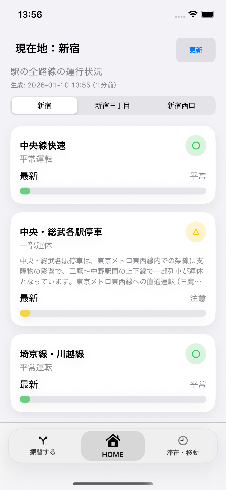
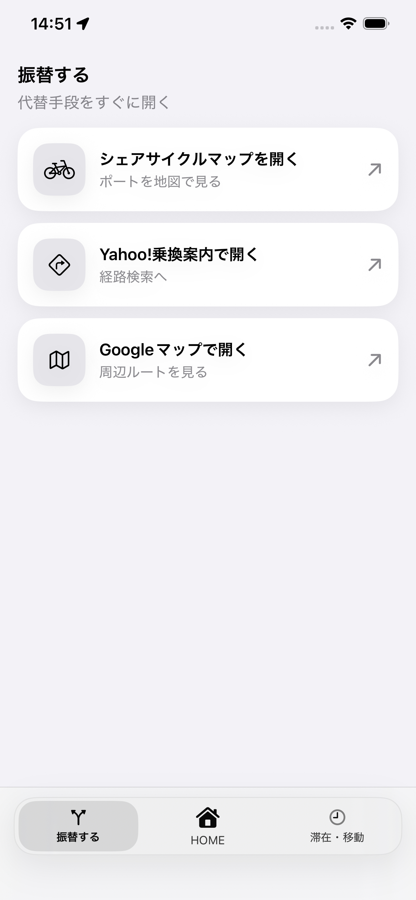
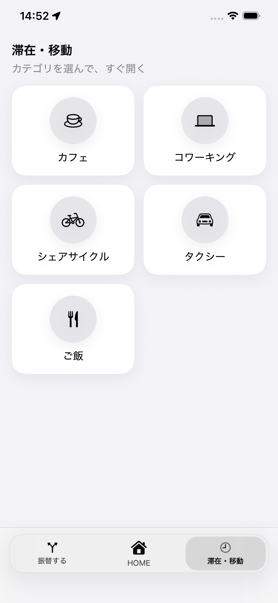
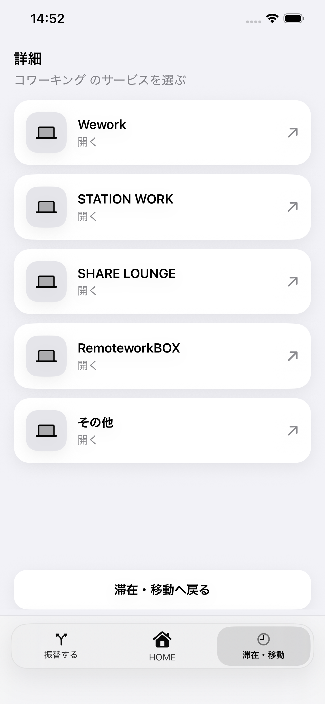

Anscapeについて
Anscapeとは
Anscapeは予期せぬダイヤ乱れや運休で生まれる「空白時間」を次の行動（Action）につなげて、駅を中心とした“価値ある時間”を提供するアプリです。
１タップで現在地の周辺の駅の路線の運行状況や近接列車の遅延状況を把握し、いつ発生したのか、どのくらい遅れているのかが一目でわかります。把握した情報を元に、左画面では振替手段を探す、右画面では別の選択肢（滞在・移動）をとる、２つの行動を画面の移動でわかりやすく表示。状況把握から次の行動までを一気通貫したアプリケーションです。
Anscapeを活用することで、利用者は今まで予期しない問題を解決するだけでなく、ビジネスやお出かけの時間を有効に活用でき、鉄道事業者はお客様の質問の対応の削減・自社サービスの利用を促し、モビリティ事業者・駅周辺の飲食店・不動産事業者のサービスの認知向上に繋げられます。
Anscapeの構成
Anscapeの構成画面は「HOME」、「振替する」、「滞在・移動」の３つの基本画面と「詳細」「シェアサイクル」の２つのサブ画面で構成される。
Anscapeの使い方
手順リストと、各手順に紐づく縦長メディア（9:19.5相当）枠を用意しています。
-
1. HOME画面へ移動
アプリを開くと、最初にアイコンと「HOME画面」ボタンが表示されるので、「HOME画面」ボタンをクリック
 -
2. 最寄り駅の運行情報を確認
クリックした後、「読込中」が表示され、現在地から一番近い駅の運行情報が表示される
- 路線名
- 状態（平常/遅延/運転見合せなど）
- 事象発生からの時間（最新/⚪︎分前）
- 時間経過バー（⚪︎分前に応じて長さが決まる）
 -
3. 駅の切り替え
上の駅名が記載のナビゲーションをスワイプすると、他の駅の情報も確認できる
-
4. 接近列車の詳細
各路線のカードをタップすると、駅に近づく３つの列車上り下り両方の情報が確認できる
- 列車番号
- 遅延時間（分）
- 行き先
- 現在の駅
- 状態（止まっているか、動いているか）
-
5. 振替手段の確認
「HOME」画面に戻り、右にスワイプすると「振替する」画面が表示され、代替手段を提示する。それぞれのサービス名をタップすると公式サイトもしくは6に遷移する
 -
6. シェアサイクルマップ
「振替する」画面で「シェアサイクルマップを開く」をタップすると、「シェアサイクル」画面が開く。現在地から半径750m以内のポートを可視化し、貸出状況が確認できる
- ポート名
- 利用可能バイク数
- 現在地からの距離(m)
- 各サイトへのリンク（iOS/Android/Web）
-
7. 滞在・移動
「HOME」画面に戻り、左にスワイプすると「滞在・移動」画面が表示される。駅周辺でできるカテゴリの選択肢が表示される。
 -
8. 詳細（カテゴリ別）
「滞在・移動」画面で、各カテゴリをタップすると、「詳細」画面が表示され、カテゴリごとのサービスが表示される。（例はコワーキング）
各サービスをタップすると、公式サイトもしくはマップに移動する。


{kind=link}
{kind=link}
{kind=link}
{kind=link}
{kind=link}
{kind=link}
製作者について
本アプリおよび本サイトは、個人/小規模チームで企画・開発しています。日々変化する公共交通の状況を、利用者が素早く把握し次の行動に移れるよう、表示の分かりやすさとデータ処理の信頼性を重視して改善を続けています。
お問い合わせ
お問い合わせはこちらまで